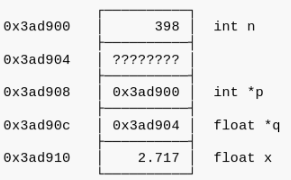
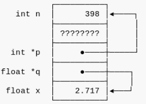

Un Puntero es una variable que contiene una dirección de memoria, la cual corresponderá a un dato o a una variable que contiene el dato. Cada variable que se utiliza en una aplicación ocupa una o varias posiciones de memoria. Estas posiciones de memoria a los que se acceden por medio de una dirección.
Cuando una variable de tipo puntero tiene almacenada una dirección de memoria, se dice que apunta al valor que está en esa dirección.
En general no importa cuál es valor exacto de un puntero, sino que basta con comprender qué es lo que hay al otro lado. Por esto, en los diagramas de la memoria se suele preferir usar flechas en lugar de las direcciones explícitas:
Los punteros se declaran de la siguiente manera:
int *x;
Esto se puede leer como lo apuntado por x es un entero. En este caso, * no es una multiplicación, sino una derreferenciación.
Una vez declarada x de la manera ya mostrada, los únicos valores válidos que se puede asignar a x son NULL o una dirección de memoria donde haya un entero:
int a, b, c;
float z;
int *p;
int *q;
p = NULL; /* valido */
p = {{'&'}}a; /* valido */
p = {{'&'}}b; /* valido */
p = {{'&'}}z; /* invalido (z no es un entero) */
p = 142857; /* invalido (142857 no es una dirección de memoria) */
q = {{'&'}}b; /* valido */
q = p; /* valido */
q = NULL; /* valido */
q = {{'&'}}p; /* invalido (p no es un entero) */
Declarar varios punteros a la vez:
int *x, *y; /* x e y son punteros */
int *x, y; /* x es puntero, y es entero */
El operador unario * de los punteros es el operador de derreferenciación. Lo que hace es entregar el valor que está en la dirección de memoria.
En otras palabras, * significa lo apuntado por.
Al derreferenciar un puntero a entero, se obtiene un entero. El puntero derreferenciado puede ser usado en cualquier contexto en que un entero sea válido:
int x, y;
int *p;
x = 5;
p = {{'&'}}x;
printf("%d", *p); /* imprime 5 */
y = *p * 10 - 7; /* y toma el valor 43 */
*p = 9; /* x toma el valor 9 */
En la última sentencia, se está asignando el valor 9 en la memoria que está reservada para la variable x, por lo que la asignacion cambia en efecto el valor de la variable x de manera indirecta.
"El operador & permite obtener el número de un cajón dado ( &a sería el número del cajón llamado a , &p sería el número del cajón llamado p ).El operador * permite acceder a un cajón conocido su número. "